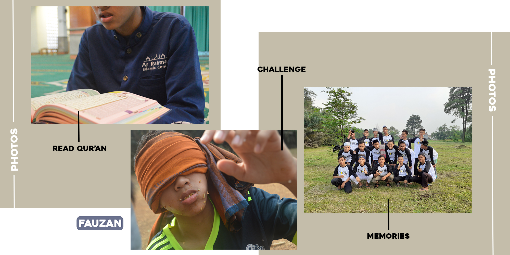

HOME
ABOUT ME
CONTACT
STORY
Halo,Namaku Fauzan
Home
Alhamdulillah tak Lupa-lupa Kita Panjatkan
Puja & Puji Syukur Kita Kehadirat Allah
Subhaanahu wa ta'ala yang Telah Memberi
Kita Beribu-ribu Nikmat,Sehingga Kita Se-
bagai Manusia Biasa tidak Mampu Menghitung
Nikmat yang Banyak tsb,Sholawat serta
Salam tak Lupa Kita Sanjung-Sajikan Ke-
pada Baginda Nabi Muhammad Shollallahu
Alaihi wa Sallam,yang Telah Membawa kita
Dari Zaman Jahiliyya Menuju Zaman Islami-
yyah dan Dari Zaman Gelap Gulita Menuju
Zaman Terang Benderang seperti yang Kita
Rasakan Sekarang.Alhamdulillah dengan iz-
in Allah Subhaanahu wa ta'ala,saya masih
bisa membuat Web ini, Saya Membuat Web ini
dengan penuh Semangat & Doa,agar teman-te-
man bisa menjadikan web ini sebagai refe-
rensi teman-teman, Dan Semoga saya dapat
terus berkarya dengan web ini.
About Me
Perkenalkan kembali nama saya Fauzan,biasa
dipanggil Fauzan, dan Ada juga yang sering
Memanggil Saya dengan Sebutan "Acenk",
Saya Lahir Di Rumah Sakit "Siti Khadijah"
yang Terletak di tengah Kota Makassar Pada
26, Januari 2004.Saya Merupakan Anak Ke-2
dari 4 Bersaudara,Kami Terlahir dari Pasangan
Terbaik. Alhamdulillah Sekarang saya duduk
di bangku Kelas Atas,tapi Saya tidak Belajar
di SMA atau SMK apalagi di STM,Saya Memutus-
kan Untuk Lebih Memperdalam Ilmu Al-Qur'an,
Karena Saya Tahu bahwa Dengan Al-Qur'an Allah
Subhaanahu wa ta'ala akan Menaikkan Derajat
suatu Kaum, dan akan Merendahkan dengannya
pula,Yaa.. dan Tentunya Saya ingin Membangga-
kan Kedua Orang Tua Saya dan Ingin Memberikan
"Mahkota" Kepada Mereka di Akhirat Kelak.
Aaamiiin...
Story
Alhamdulillah Selama Saya Hidup,saya Mendapatkan
Penghargaan-penghargaan yang Membuat Saya Semakin
Yakin untuk Melanjutkan Hidup Saya ke Jenjang Pen-
didikan yang lebih Tinggi,Contohnya adalah : Keti-
ka Saya Berumur 5 tahun,Saya Lulus Masuk ke TK,
dari 34 orang yang Mendaftar,Alhamdulillah Lulus Semuanya.Ketika itu Saya Sangat Semangat untuk Be-
lajar apa yang Belum Saya Ketahui.Setelah Penama-
stan TK Saya Mendapatkan Juara 2,yaa..Tentu,Ini
Semua Berkat Ke-2 Orang Tua Saya,Akhirnya Saya pun
Didaftarkan oleh Orang Tua Saya ke MIT Al-Ishlah,
SD yang Selama ini saya Idamkan.Alhamdulillah Tak-
dir Berkata : "Lulus".Saya pun Menjalani Hidup Ber-
sama Teman-teman saya dengan Tentram dan Bahagia
Selama 6 Tahun Lamanya Walaupun Sifatnya agak Se-
dikit Ke Anak-anakan,yaa... Namanya juga Bocah SD,
Mau Gimana lagi.Saya akhirnya Berfikir,Kalau Saya
terus Begini Kapan Indonesia Maju???.Akhirnya Saya Memutuskan Untuk Menghafal Al-Qur'an.Dan Alhamdu-
lillah Sampai Sekarang Saya Telah Hafal 23 Juz Al-Qur'an,Thank You My Father & My Mother, I love You Too...

Contact
Facebook
Instagram
 ABOUT ME
ABOUT ME
 CONTACT
STORY
CONTACT
STORY